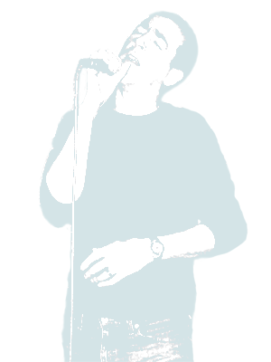

|  | ||
|
Absolutedly stunning in session - Alan Raw, BBC Radio Portabello were a 4/5-piece rock band originating from Leeds, England. Founding members were Declan Corcoran (vocals, acoustic guitar), Michelle Shay (vocals), Tim Canfer (electric guitar), Luke Slowen (bass) and Dean Johnson (drums). This line-up wrote a swathe of original alternative and acoustic rock songs, culminating at the band's first live show at the Mean Fiddler, Harlesden, London in 1998. Songs from this era were compiled on the Incandescent collection. Dean Johnson and Michelle Shay left the band in 2000. New drummer, Mark Staton, was recruited and Portabello continued as a 4-piece, with a significant shift in musical dynamic to heavier, more progressive songwriting. Early 2001 saw the limited release of the Mercury EP, generating interest from A&R at US-based The Kurland Agency and UK-based management company, Peralta Hills. A string of live performances followed, most notably at The Borderline and The Kashmir Klub (hosted by ex-Cutting Crew, Tony Moore) in London and The Cavern Club in Liverpool. Portabello became residents at the monthly ''Launch Pad'' acoustic night at the Roc Bar, Leeds, hosted collaboratively between lead singer, Declan Corcoran and ex-Perfume front man, Mick McCarthy. This monthly event became a haunt for Leeds glitterati of the time, with regular appearances from other notable Leeds bands and performers such as 10,000 Things (with lead singer Sam Riley), members of the Kaiser Chiefs, Four Day Hombre (now Hope & Social), Mik Artistik and Alex Haynes. Portabello toured extensively during 2001, and March 3rd 2002 saw the release of their debut album, Once Around The Sun, through their own record label, Armchair Records, to critical acclaim. A nationwide acoustic tour of Borders bookshops followed and with several high profile appearances, the band's profile raised considerably during 2002/03, sparking interest from several independent record labels. 2003/04 saw the band writing and recording new material, culminating in a 2-track Intacto demo being pressed and released in July 2004. Later that year, the band added three additional tracks to form the Intacto EP, two of which were recorded on the BBC Raw Talent radio show. It was only weeks later on the same show, they picked up the accolade for 'best local gig of 2004'. In Spring 2005, various outside pressures led to Portabello mutually agreeing to split up the band. Members have since been involved with other projects, notably Grand Marshalls (Luke Slowen) and Fat Charlie (Tim Canfer). The founding members are having a reunion in 2010. The Portabello back-catalogue, including previously unheard B-sides and Demos, is available on their Bandcamp site, where fans can download and buy albums or tracks for as much they think they're worth. Email Portabello at |